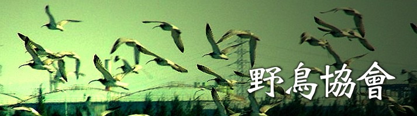

線西肉粽角一帶已成為保育鳥類棲息、覓食之地，進年來也有不少團體、愛鳥人士前往觀賞，但近年來賞鳥活動卻大多向南移動到漢寶溼地去，為了解種種原因，以及如何在肉粽角賞鳥、賞鳥注意事項、保育…相關事宜，我們一行人前往彰化野鳥學會，準備一探究竟！
彰化野鳥學會每年固定會舉辦一些團體的賞鳥活動，如春季候鳥、鷹揚八卦、墾丁賞鷹、金門賞鳥…等，在線西肉粽角一帶的賞鳥活動主要是4月的候鳥季，行程除了到肉粽角賞鳥外，還會順便參觀伸港的社區及大肚溪口一帶。 其餘的賞鳥活動，可以事先打電話預約，15人以上就有專人講解，簡單的賞鳥裝備需自己準備，至於高倍望遠鏡則可由野鳥學會提供。
現況描述
改進策略
環境方面
海濱一帶風沙大，常形成如薩哈拉沙漠的景象。
交通方面
欲進入彰濱工業區需經過管制區，雖管制不嚴格，但是路線指標有些凌亂。
可以將路線指標標示得更明顯，讓人一目了然。
政府規劃
近年來蚵架的搭設，鑿成鳥類棲地破壞，鳥類無棲息地、食物，而嚴重影響大杓鷸的棲息。另外釣魚客偶而也會影響鳥類覓食。
應由政府仿效國外將當地分區規劃，如分為保育鳥類區、蚵架區、釣魚區…，以防彼此之間相互干擾、影響。